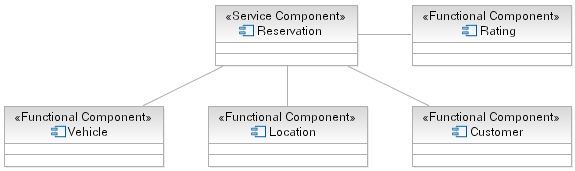

Functional components provide additional business function to a service component; in many respects, the capability
provided by a service component is dependent entirely on its functional components and any additional business logic it
implements on top of these.
Functional components are often to be found among Type Managers - components that manage a particular domain element,
for example "Vehicle", "Customer", "Schedule", and so forth. It should be made clear that these domain elements are
more frequently large-grained graphs of data rather than simple structures.
Example
Considering the Rent-a-Car example, the Reservation service component need to be able to pull together details about
the customer, the location they wish to hire from and the vehicles available for the class they specify. Also we need
to be able to determine the customer's rating such that we can provide the correct level of service in the event of
issues such as unavailable vehicles. The following diagram demonstrates the component model for Reservation.

|